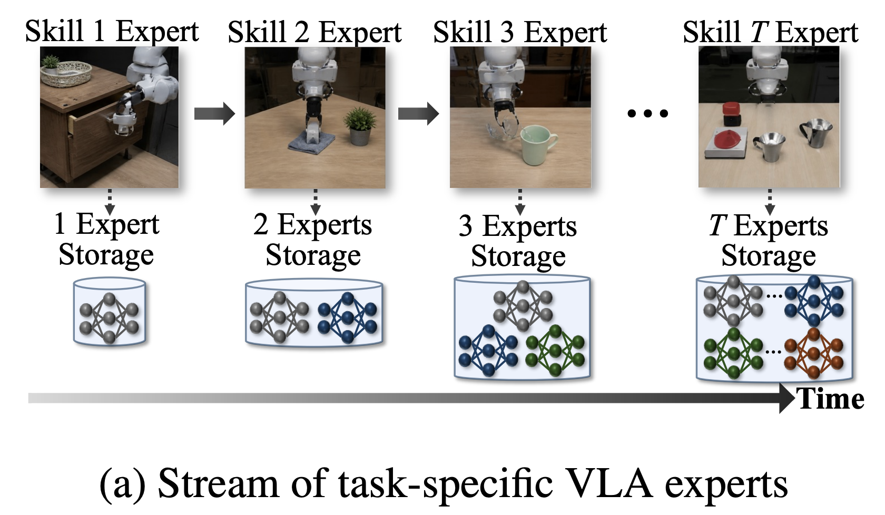
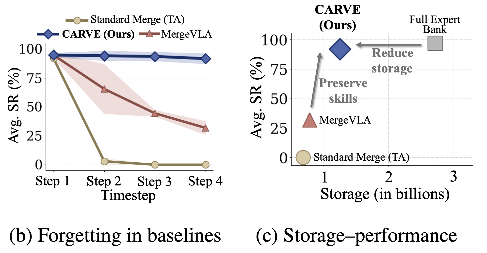
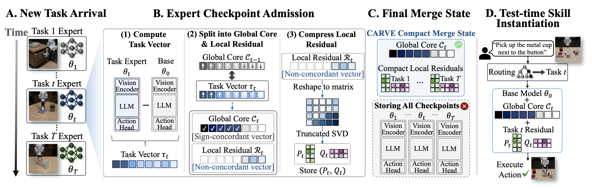
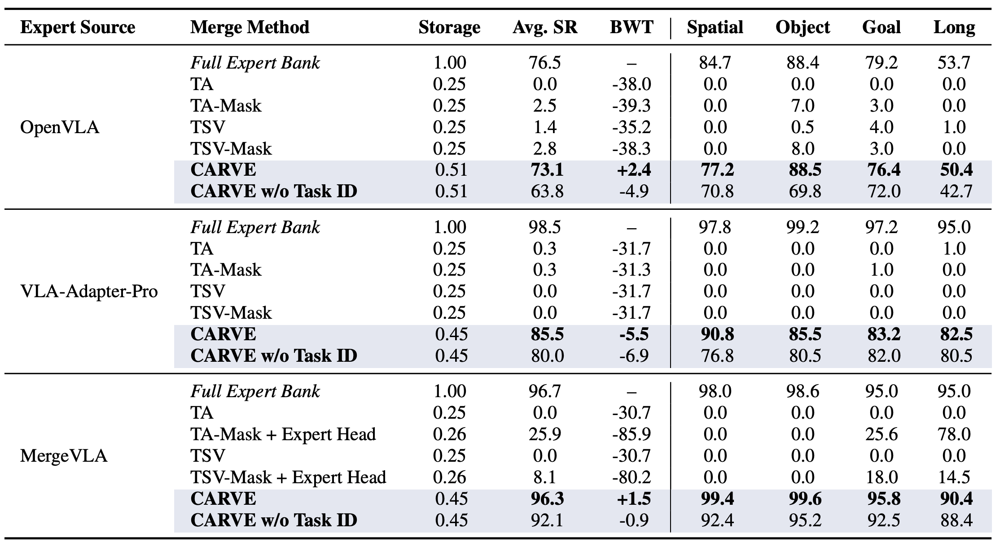
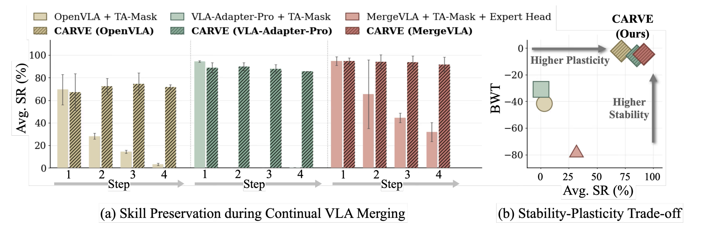

CARVE separates what can be safely shared across the expert stream from what should remain skill-local, enabling storage-efficient continual admission without joint retraining or full checkpoint retention.

Evaluated on continual LIBERO expert streams across three VLA backbones. CARVE consistently outperforms all compact merging baselines and approaches full expert bank performance.
Main Results on Continual VLA Expert Merging (LIBERO)

Continual Skill Preservation & Stability–Plasticity Trade-off

CARVE successfully executes all 40 manipulation tasks across four LIBERO task suites after continual expert merging.